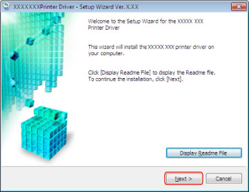
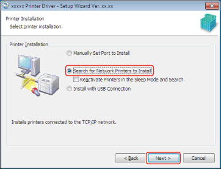
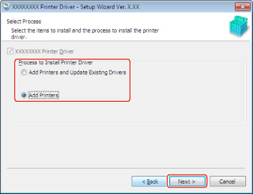
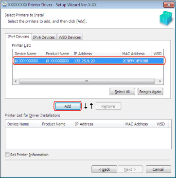
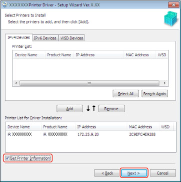
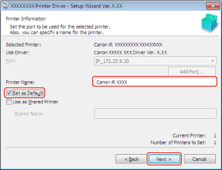
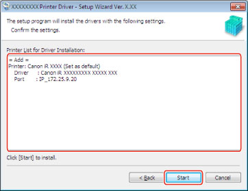

The installer automatically searches for devices on the network and installs the appropriate driver(s).
|
IMPORTANT
|
|
Be sure to log on as a member of Administrators when you start the computer.
You can search only for devices in the same subnet as your computer.
This procedure can only be performed in a TCP/IP network environment. If you do not know what network environment is being used, check with your network administrator.
|
Start the installer.
When downloading the newest driver from the Canon web site:
Download the Setup version driver from the Canon web site (http://www.canon.com/).
Decompress the downloaded file.
If the installer does not start automatically when decompressed, double-click the [DrvSetup.exe] file in the appropriate folder.
Click [Next].

Depending on the printer model you are installing, the license agreement screen may be displayed. If so, proceed to step
3. → step
2. → step
4.Read the license agreement carefully. If you agree to the terms, click [Yes].
Select [Search for Network Printers to Install] → click [Next].

To search for devices in sleep mode on the network, select [Reactivate Printers in the Sleep Mode and Search].
Select any other required settings → click [Next].

[UFRII XPS Printer Driver]: Select the driver to be installed.
[Process to Install Printer Driver]: This is displayed if there are already drivers installed. Select a process to apply to existing drivers if necessary.
Select the device you want to install from [Printer List] → click [Add].

You can switch between the [IPv4 Devices], [IPv6 Devices] and [WSD Devices]tabs.
If no devices are displayed in [Printer List], click [Search Again].
If no devices are found after you click [Search Again], refer to "
Port Setting Installation."
|
NOTE
|
|
To install the device as a WSD device, the WSD print settings must be enabled and the PDL selection (PnP) function must be set to match the printer driver you are using at the device beforehand. For details, refer to the manuals provided with the device.
|
7.
Verify that the device you selected in step
6. has been added to the
[Printer List for Driver Installation].If you want to delete a device from the list, select the device → click [Remove].
8.
If you want to change the device name, or set the device as the default, select [Set Printer Information] → click [Next].

If you do not want to change these settings, click [Next] → skip to step
10.9.
If necessary, change the name in [Printer Name] → if you want to set the device as the default, select [Set as Default] → click [Next].

If you want to specify shared printer settings, select [Use as Shared Printer] (see
"Print Server Settings").Verify [Printer List for Driver Installation] → click [Start].

Click [Exit] (or [Restart]).
The installed device(s) are displayed in [Devices and Printers] (or [Printers and Faxes] or [Printers]) in the Windows Control Panel.
The installation procedure is finished.